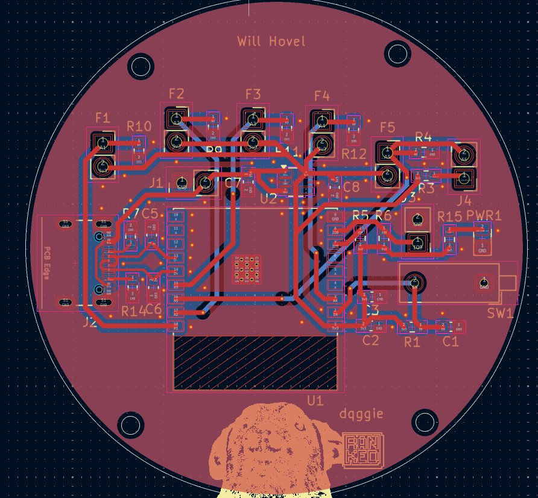
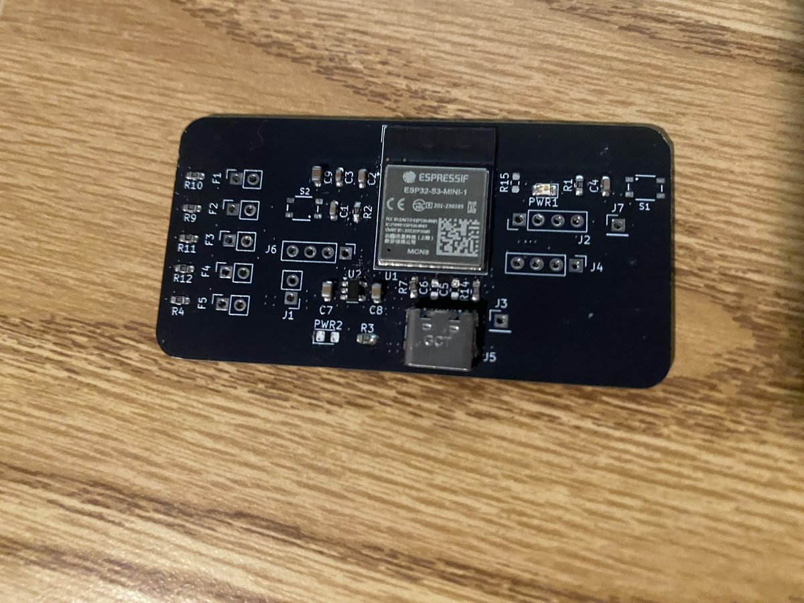
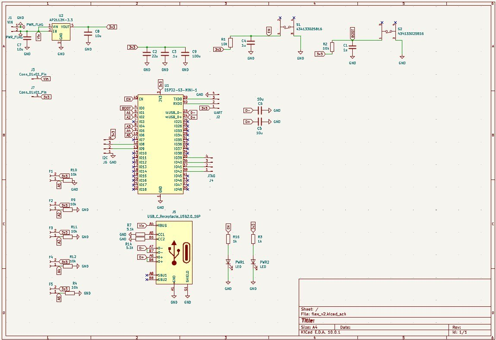
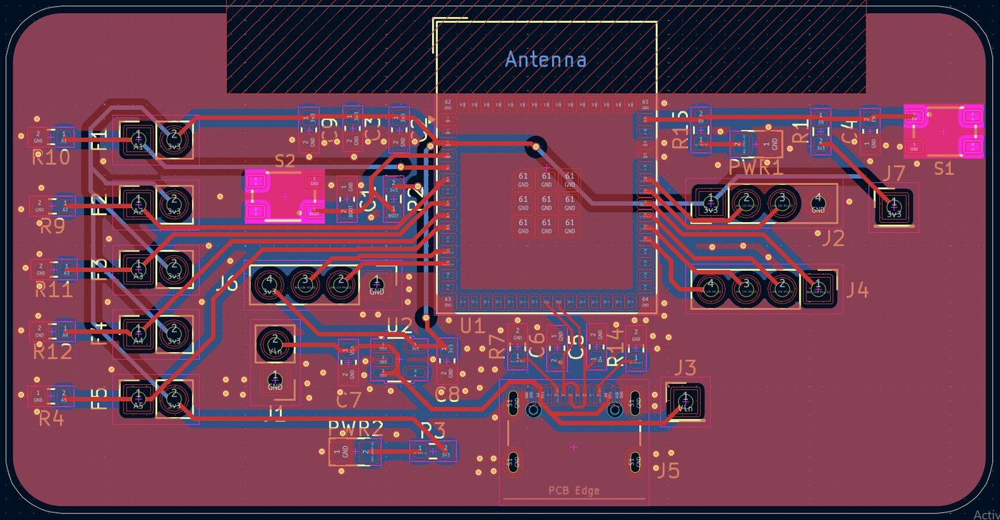

Methods and hardware files
Methods: how I measured each number
Data
3,267 labeled samples at 50 Hz for five gestures (fist, knife_hand, middle_finger, thumbs_up, triton), recorded by 3 people over 15 trials. Each row is label,ch0,…,ch4.
Accuracy
I replay the firmware pipeline in Python: min-max constants computed from the training folds only, inputs clipped to [0, 1] like the firmware, and a per-sample argmax. I split each recording into 5 contiguous chunks, train on four and test on the fifth, and drop 25 samples (0.5 s) around the held-out chunk from training so near-duplicate neighbors cannot leak. The result is the mean ± standard deviation over the 5 folds. The random 80/20 split gave 100%, which is why I use the blocked version.
Timing
A benchmark sketch runs on the board. Inference time is 5 batches of 1,000 forward passes timed with micros(). Cycle time is 200 passes at 50 Hz, timing the ADC read (5 channels × 8), normalize and forward pass, and the OLED update. It leaves out serial/BLE output and the vote.
Limits
- The cross-validation is blocked in time, not split by person or by trial, so the training data contains every person. I have not measured accuracy on someone new or on a re-worn glove, so treat 97.8% as an upper bound. Leave-one-person-out is the next test.
- The accuracy number does not include the vote or the confidence gate.
- Timing is firmware-only, not finger-to-pixel latency.
- Timing was measured on a 2-gesture model (326 parameters). The 5-gesture network has 365 and adds a few multiply-accumulates.
Reproduce
The validation scripts and benchmark sketch are in the repo: 05_validation/validate_glove.py, 06_bench/06_bench.ino, 05_validation/bench_capture.py, and 05_validation/make_report.py.
Hardware: V1 and V2 boards, schematic, layout
V1: circular board
A circular PCB I designed to sit flat on the back of the hand. The ESP32-S3-Mini-1 is in the middle, with the antenna area clear of copper on all layers.


V2: rectangular board
A rectangular board for bench testing and firmware work. It has the same signal chain as V1 with refined passives and routing.



Code: the three programs, the Arduino libraries and the validation scripts are on GitHub.